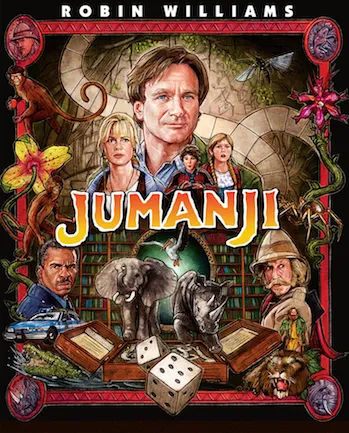

Trending
Jumanji
Jumanji is a 1995 American fantasy adventure film directed by Joe Johnston. It is a loosely adapted story of Chris Van Allsburg's 1981 children's book of the same name. The story is about a supernatural board game that releases jungle-based hazards upon its players with every turn they take.
Oppenheimer
Oppenheimer is a 2023 biographical drama film about J. Robert Oppenheimer, the theoretical physicist known as the "father of the atomic bomb" for his role in the Manhattan Project during World War II. The film explores the moral and personal struggles of Oppenheimer as he contributes to the development of nuclear weapons.
Recommended for You
Jumanji
Jumanji is a 1995 American fantasy adventure film directed by Joe Johnston. It is a loosely adapted story of Chris Van Allsburg's 1981 children's book of the same name. The story is about a supernatural board game that releases jungle-based hazards upon its players with every turn they take.
Oppenheimer
Oppenheimer is a 2023 biographical drama film about J. Robert Oppenheimer, the theoretical physicist known as the "father of the atomic bomb" for his role in the Manhattan Project during World War II. The film explores the moral and personal struggles of Oppenheimer as he contributes to the development of nuclear weapons.